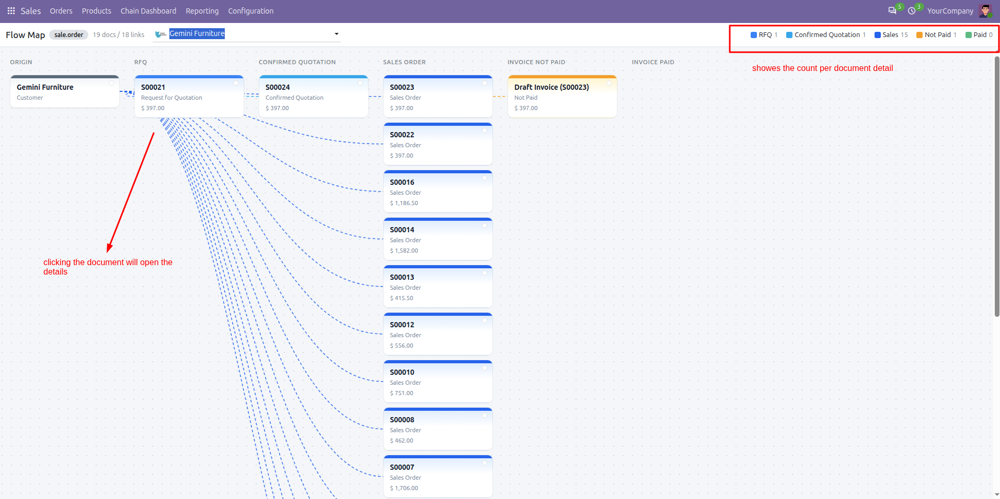
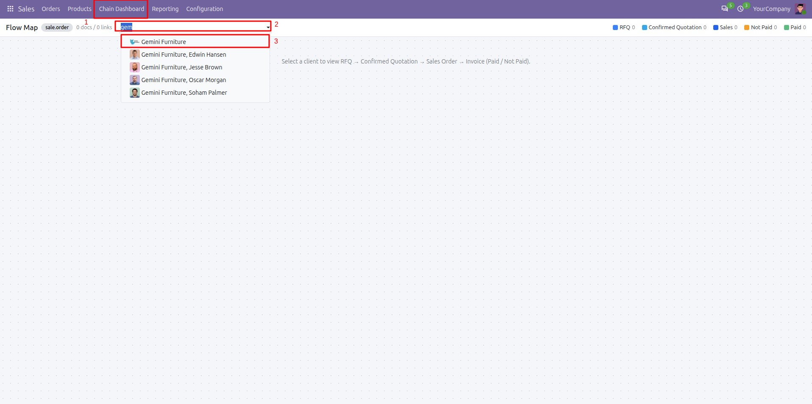

Sale Chain Dashboard helps sales teams understand the full customer document chain in one interactive board. Select a client and instantly see quotations, sales orders, and customer invoices linked in a clear flow map.

sale_management, account.